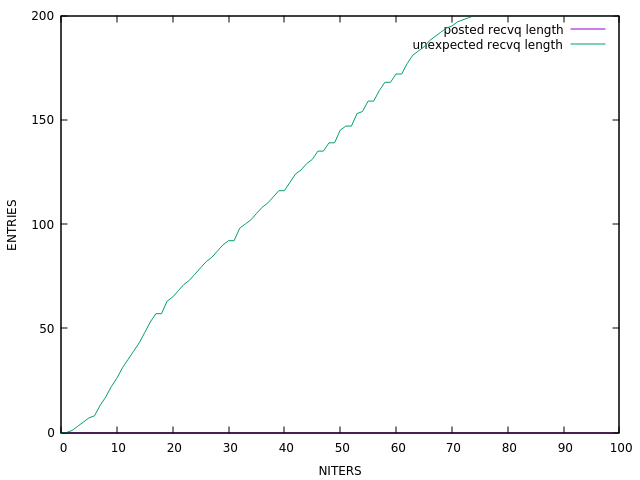
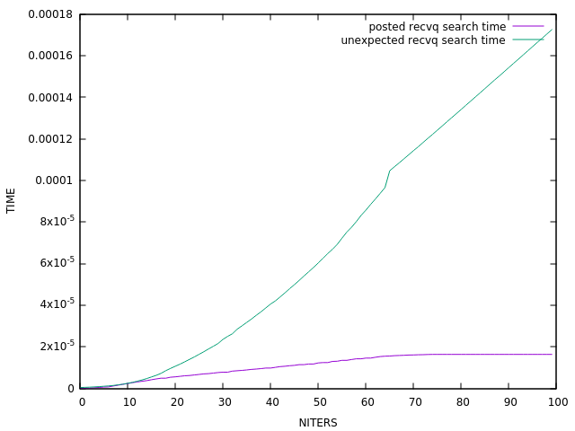
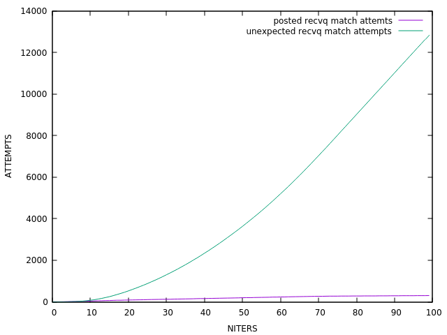

TASK: nto1
DESC: N processes send short messages via eager proto to the receiver. This example shows extremely rapid growth of the unexpected message queue.

Unexpected queue allocated buffer size ~> min = 0, max = 819200, avg = 533299 (0.509 Mb)